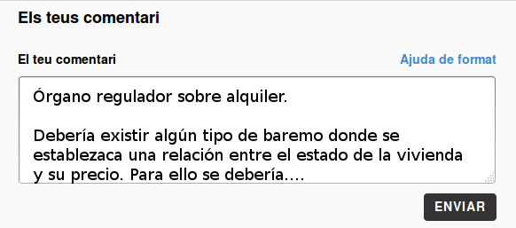

Recomendaciones participativas
1. Para facilitar el debate si hacemos un Comentario deberemos hacerlo como en el siguiente ejemplo:

2. Algunas recomendaciones para el mejor funcionamiento de la herramienta.
- Ven instruída. Lee los comentarios ya existentes antes de lanzar tu propuesta, para no repetir tu idea si ya ha sido recogida.
- Sé propositiva. Para una buena deliberación son necesarias las aportaciones constructivas, no sólo las críticas.
- Sé respetuosa. Se trata de dialogar y construir. Respeta las opiniones de los demás y cuestiona con fundamento.
- Sé imaginativa. Necesitamos buenas ideas realizables. Una inteligencia colectiva capaz de aportar a las mejores propuestas.
- Sé ordenada. Responde siempre respetando el orden del tema tratado y dentro de la temática correspondiente. Habrá más espacios más adelante para tratar otros temas.
- Sé sintética. Siempre que puedas, se clara y concisa. Lo bueno, si breve, dos veces bueno.
3. Hemos colgado los textos en catalán y castellano, comentad en el idioma con el que os sintáis más cómodos.